나만의 에이전트 만들기 — 핸즈온
환경 준비(Node.js)부터 git/github, 에이전트 맞춤 설정 5대 기능, 실전 제작까지
강사 소개 — 개발자F · devf.ai (클릭하면 열립니다)
도구를 깔고, 기록하는 법을 배우고, 에이전트를 길들이는 다섯 가지 장치를 이해한 뒤, 직접 하나 만들어 갑니다.
JavaScript 실행 환경 · 최신 LTS(v22 이상)
Windows 10/11 · macOS 두 갈래 설치, 확인, 오류 해결
next.js 실행에 필요합니다. 브라우저 밖(내 컴퓨터)에서 JavaScript를 돌려 주는 엔진이라고 생각하면 됩니다.
Node.js LTS — v22 이상
다운로드 페이지에서 반드시 LTS 탭을 선택하세요. LTS(Long Term Support)는 장기 지원되는 안정 버전입니다.
npm이 함께 설치됩니다. 뒤에서 npm --version으로 같이 확인합니다.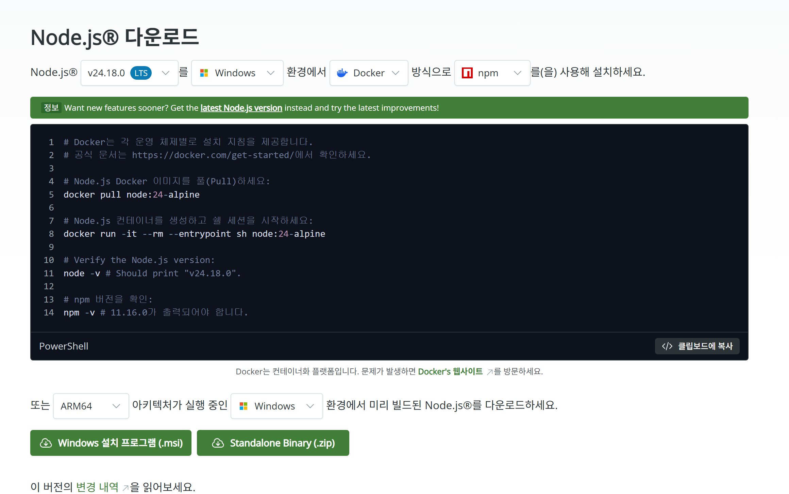
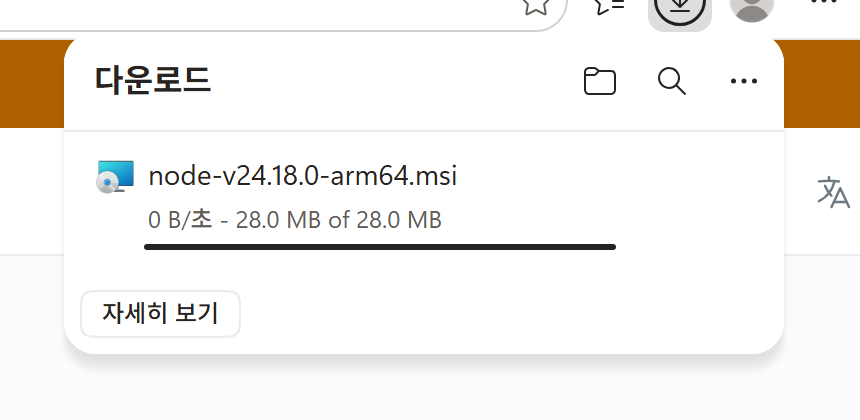
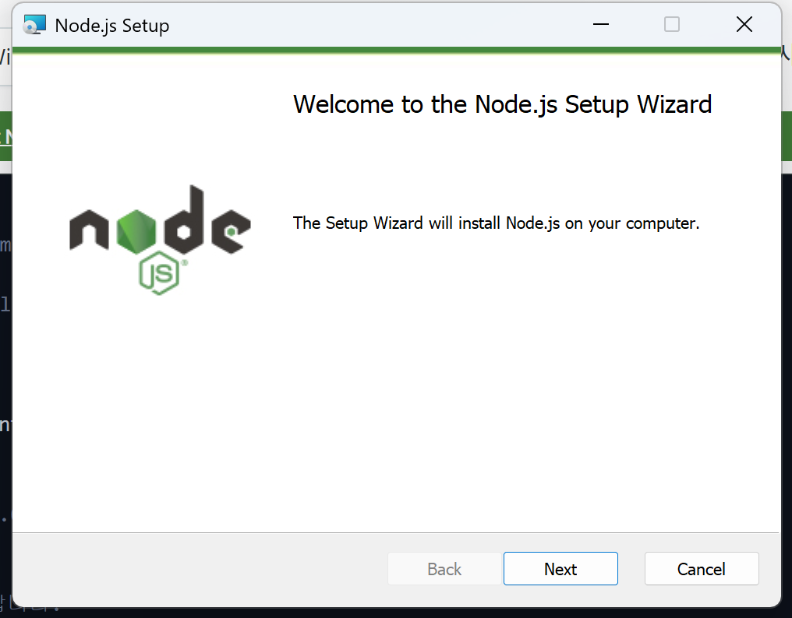
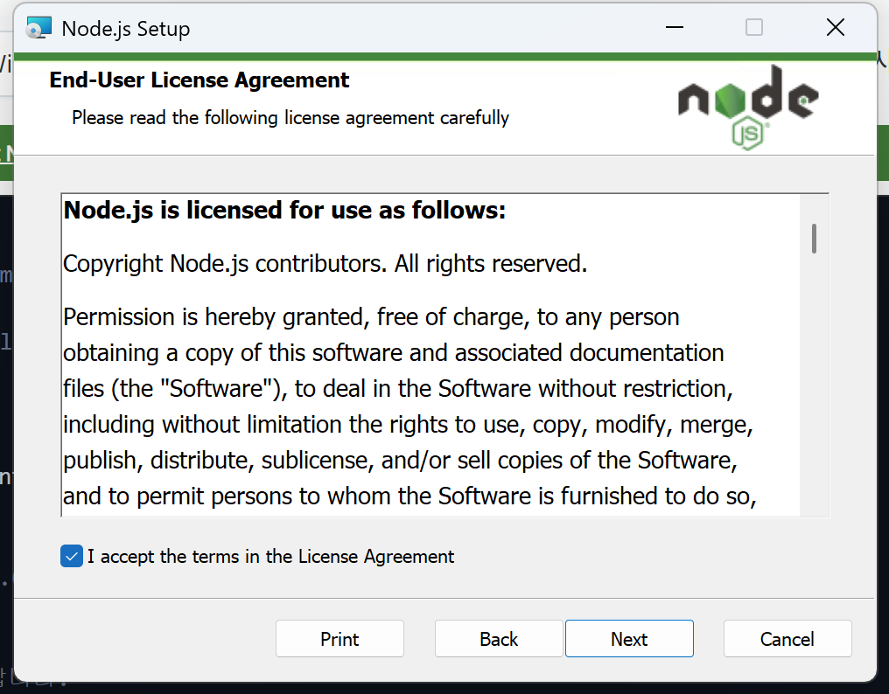
설치 경로, 구성 요소, Native Tools 화면 모두 손대지 않고 Next만 누르면 됩니다.
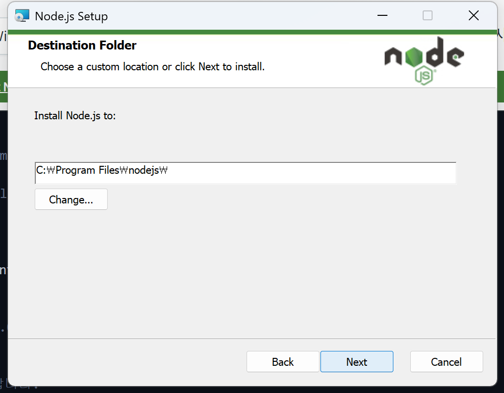
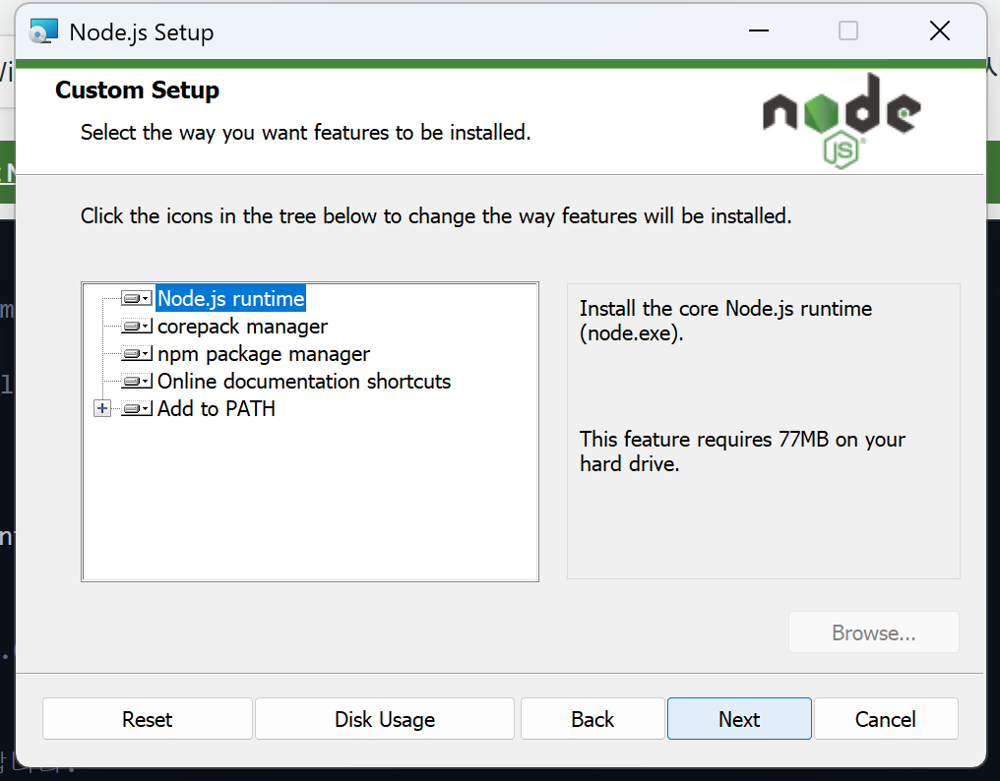
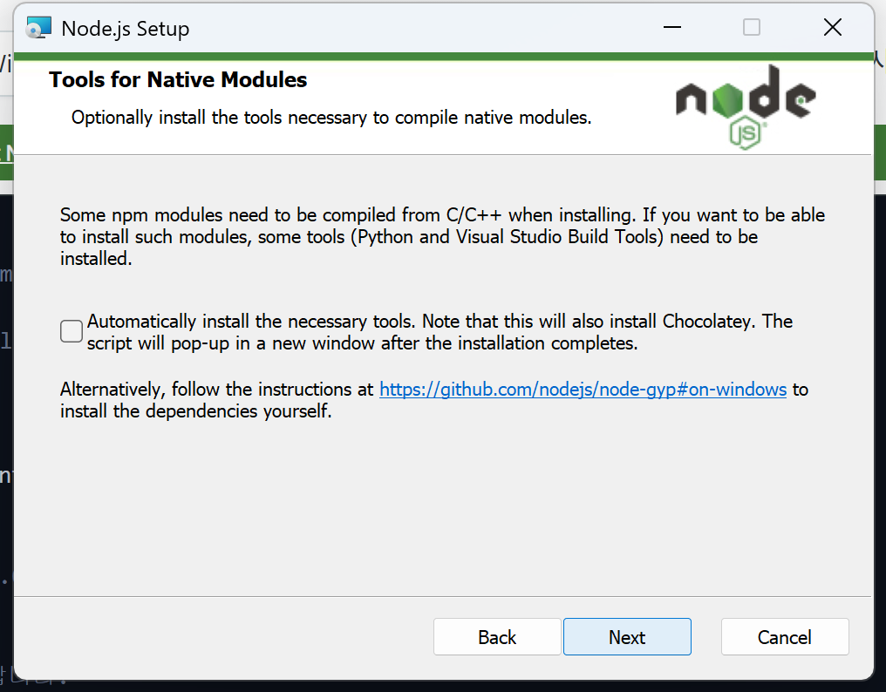
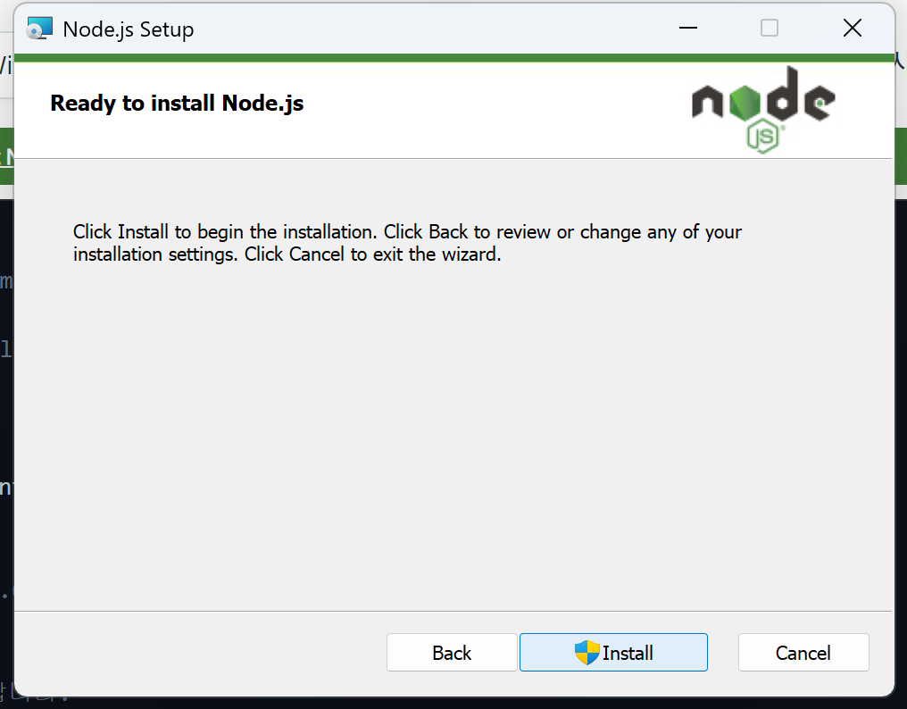
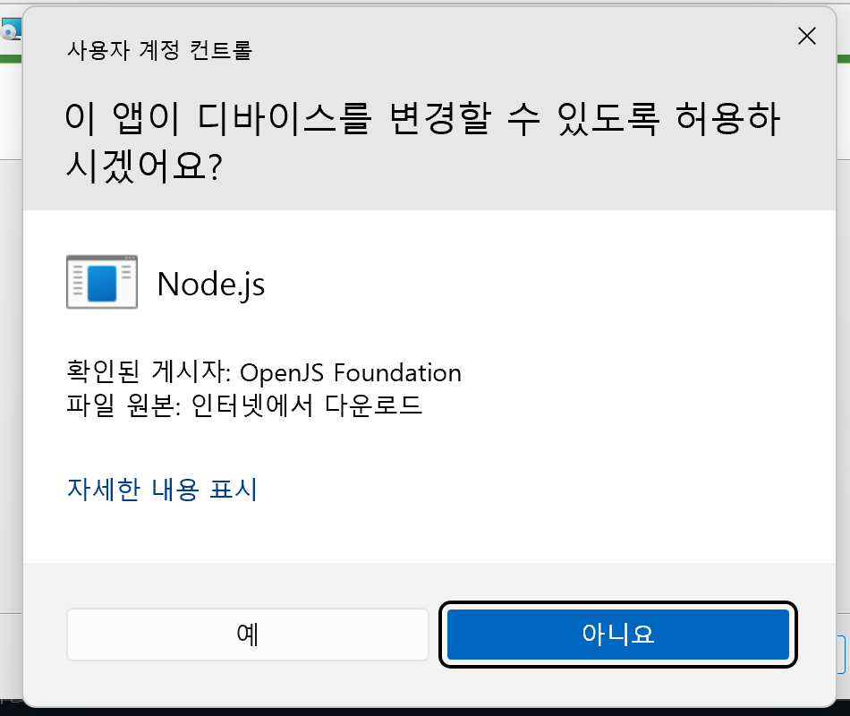
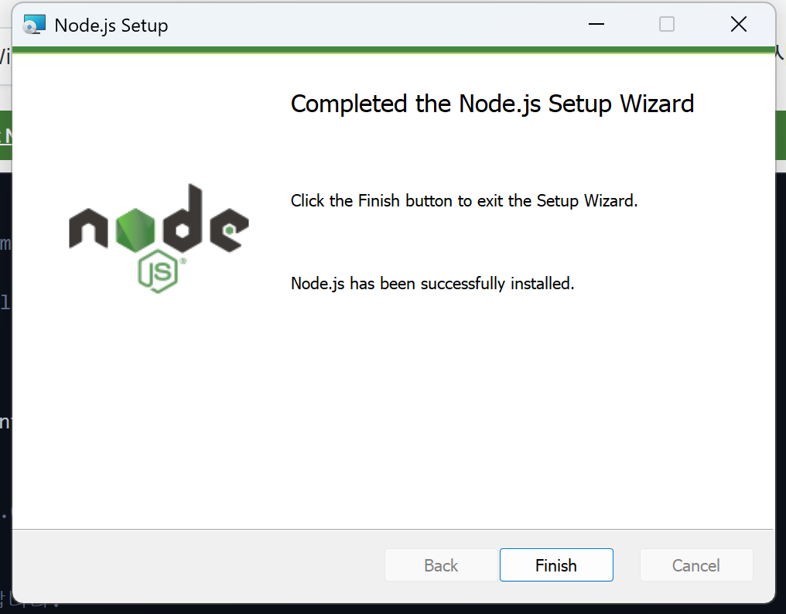
.pkg 파일 실행 → 계속 → 설치 → 완료Homebrew(맥용 패키지 관리자)를 이미 쓰고 있다면 터미널 한 줄이 가장 빠릅니다.
# 터미널에서 아래 명령어 입력
brew install node터미널을 닫고 새로 연 뒤, 아래 명령어를 하나씩 입력하세요.
node --version
npm --versionv22.x.x 이상 (LTS 버전)
10.x.x 이상
node 입력 시 command not foundNode.js PATH 미등록 — 시스템이 node 명령의 위치를 모르는 상태입니다.
npm -v 입력 시 PSSecurityExceptionNode.js를 설치했는데 PowerShell에서 npm -v를 입력하면 PSSecurityException 오류가 발생하는 경우가 있습니다.
npm.ps1)의 실행을 막고 있는 것입니다. 설치가 잘못된 게 아닙니다.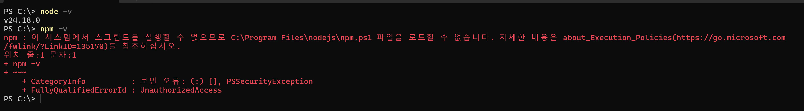
Set-ExecutionPolicy RemoteSignednpm -v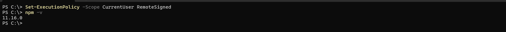
로컬 스크립트는 허용하고, 인터넷에서 다운로드한 스크립트는 서명된 경우만 실행하도록 하는 일반적인 개발자 설정입니다.
node --version → v22.x.x 이상 출력npm --version → 10.x.x 이상 출력비개발자를 위한 완전 입문
코드를 한 줄도 몰라도 됩니다. “계절이 바뀔 때 옷을 정리해 창고에 맡기는 일”에 빗대어, 개발자들이 하루에도 수십 번 쓰는 여섯 개의 명령어를 이해합니다.
준비물 — git 설치: git-scm.com/downloads · GitHub 가입: github.com (클릭하면 열립니다)
한 번쯤 이런 폴더를 본 적이 있을 겁니다.
git은 “무엇을, 언제, 왜 바꿨는지”를 기록으로 남기고
언제든 그 시점으로 되돌아갈 수 있게 해주는 도구입니다.
옷을 꺼내 늘어놓고, 고르고, 박스에 담고, 이름표를 붙이는 모든 작업이 여기서 일어납니다. 내 컴퓨터 안에서만 돌아가기 때문에 인터넷이 끊겨도 상관없습니다.
포장이 끝난 박스를 맡아두고, 가족이든 동료든 허락된 사람이라면 누구나 같은 창고에서 박스를 꺼내 볼 수 있게 해줍니다. 창고에 보내려면 당연히 인터넷이 필요합니다.
| 비교 항목 | git | github |
|---|---|---|
| 비유 | 우리 집 작업대와 옷장 | 동네 물류 창고 |
| 있는 곳 | 내 컴퓨터 안 | 인터넷 위 |
| 하는 일 | 고르고, 포장하고, 기록한다 | 보관하고, 나눠 준다 |
| 인터넷 | 없어도 됨 | 반드시 필요 |
| 비슷한 다른 선택지 | 사실상 git 하나뿐 | GitLab, Bitbucket 등 |
“github를 배운다”는 말은 대부분 “git을 배운다”는 뜻입니다.
정리 기술은 git이고, github는 그 결과물을 맡기는 장소일 뿐입니다.
| 단계 | 옷장 비유 | 명령어 | 한 줄 설명 |
|---|---|---|---|
| 1 | 거실에 작업대를 편다 | git init | 이 폴더를 이제부터 기록하겠다고 선언 |
| 2 | 보낼 옷을 골라 바닥에 모은다 | git add | 이번에 기록할 것만 추려낸다 |
| 3 | 박스를 봉하고 이름표를 쓴다 | git commit -m "겨울 아빠옷" | 되돌아올 수 있는 한 시점을 만든다 |
| 4 | 박스를 창고로 보낸다 | git push | 내 기록을 인터넷 창고에 올린다 |
| 5 | 창고에서 박스를 가져온다 | git pull | 창고의 최신 상태를 내 작업대로 내려받는다 |
| 6 | 창고 주소를 복사해 새 집에 차린다 | git clone | 다른 컴퓨터에도 똑같은 작업대를 만든다 |
git addgit commitgit pushgit pullgit clonegit init — 작업대를 편다git init은 “이 폴더에서 벌어지는 모든 변화를 이제부터 기록하겠다”고 선언하는 단 한 번의 행위입니다. 실행하면 폴더 안에 작은 관리 공간(“작업대 밑 기록 서랍”)이 생기고, 앞으로의 모든 기록이 거기 쌓입니다. 직접 열어볼 일은 거의 없습니다.
git initgit clone으로 가져온 폴더에는 작업대가 이미 펴져 있으므로 하지 않습니다.git add — 보낼 옷을 골라낸다git add는 바꾼 것들 중 이번 기록에 포함시킬 것만 골라내는 작업입니다.
git add — 두 가지 쓰임새git add 파일이름 # 특정 파일 하나만 고른다
git add . # 점 하나 = "바뀐 것 전부 다"익숙해지기 전까지는 점 하나로 전부 담는 습관이 편하지만, 기록을 깔끔하게 남기고 싶다면 골라 담는 쪽이 훨씬 낫습니다.
git add를 했다고 아직 아무것도 저장되지 않았습니다. 옷을 바닥에 쌓아만 둔 상태라, 마음이 바뀌면 그냥 도로 옷장에 넣으면 됩니다. 되돌리기가 가장 쉬운 단계입니다.git commit — 박스를 봉하고 이름표를 붙인다git commit은 골라둔 변경사항을 하나의 기록으로 확정 짓는 행위입니다. git에서 가장 중요한 명령어이고, 사실상 git의 존재 이유이기도 합니다.
git commit -m "겨울 아빠옷"-m 뒤 따옴표 문장이 바로 박스에 쓰는 이름표 — 정식 명칭은 커밋 메시지입니다.
3개월 뒤의 나는 오늘의 나를 전혀 기억하지 못합니다. 창고에 박스 200개가 전부 “정리함”, “수정”, “ㅇㅇ”이라면 그 기록은 없는 것과 같습니다.
| 나쁜 이름표 | 좋은 이름표 | 왜 |
|---|---|---|
| 수정 | 계약서 3조 위약금 조항 문구 수정 | 무엇을 바꿨는지 보인다 |
| ㅇㅇ | 표지 이미지를 저해상도에서 원본으로 교체 | 찾아올 이유가 생긴다 |
| 최종 | 고객사 피드백 반영 — 가격표 페이지 추가 | 맥락이 남는다 |
init · add · commit 세 단계는 전부 우리 집 거실에서 벌어지는 일입니다. 인터넷이 끊긴 비행기 안에서도 얼마든지 할 수 있습니다. 아직 창고는 우리가 뭘 했는지 전혀 모릅니다.git status지금 작업대 상태를 확인하는 명령. 어떤 옷이 바닥에 나와 있고 어떤 옷이 아직 옷장에 있는지 보여줍니다. 헷갈릴 때마다 부담 없이 쳐보면 됩니다.
git log지금까지 봉한 박스 목록을 보는 명령. 이름표가 최근 순으로 쭉 나옵니다.
git push — 창고로 박스를 보낸다git pushgit pull — 계절이 돌아와 박스를 가져온다git pull은 창고의 최신 상태를 내 작업대로 내려받는 작업입니다. 혼자 일할 때는 “다른 컴퓨터에서 하던 작업 이어받기”, 여럿이 일할 때는 “동료들이 그 사이 한 작업을 내 쪽에 반영하기” — 후자가 훨씬 중요합니다.
git pullgit pull — 이 습관 하나로 대부분의 골치 아픈 상황을 예방합니다. 몇 달 전 옷장을 붙들고 정리하는데 창고는 이미 딴판인 상황이 가장 곤란합니다.git clone — 다른 집에서도 같은 창고를 쓴다git clone은 창고의 프로젝트 전체를 통째로 내 컴퓨터에 처음 가져오는 작업입니다. 현재 상태만이 아니라 지금까지 쌓인 모든 박스 — 전체 기록이 함께 옵니다. 그래서 받은 직후부터 “3개월 전으로 되돌리기”가 바로 가능합니다.
git clone 창고주소clone = 처음 한 번, 아무것도 없는 상태에서 통째로. 이사 들어오는 날 하는 일.pull = 이미 옷장이 있는 상태에서 바뀐 것만. 매일 아침 하는 일.이게 브랜치가 없을 때 벌어지는 일이고, 이 딜레마는 일에서 매일 반복됩니다.
“멀쩡히 돌아가는 것을 건드리지 않으면서,
마음껏 실험하고 싶다.”
이 한 문장이 브랜치가 존재하는 이유 전부입니다.
| 옷장 비유 | git 용어 | 성격 |
|---|---|---|
| 가족이 매일 쓰는 원래 옷장 | main 브랜치 | 항상 정상이어야 하는 기준선 |
| 실험용으로 하나 더 만든 옷장 | 새로 만든 브랜치 | 망가져도 되는 작업 공간 |
| 실험 결과를 원래 옷장에 반영 | 병합, merge | 실험이 성공했을 때만 |
git switch -c 사람별-정리-실험 # 실험용 옷장을 만들고 그 앞에 서는 것까지 한 번에
git add .
git commit -m "아빠 서랍과 아이 서랍 분리"
git push # 이후는 배운 것과 완전히 똑같이
git switch main # 원래 옷장 앞으로 돌아가기
git merge 사람별-정리-실험 # 실험이 성공했다면 원래 옷장에 반영git switch main 하는 순간 폴더 내용물이 원래 옷장 상태로 통째로 되돌아갑니다. 파일이 사라진 게 아니라 다른 옷장 앞에 서 있는 것뿐입니다. 다시 git switch 사람별-정리-실험 하면 그대로 돌아옵니다.무서운 상황이 아니라, git이 조용히 덮어쓰지 않고 물어봐 주는 가장 안전한 동작입니다.
사람이 보고 결정한 뒤 다시 봉하면 끝납니다.
| 상황 | 브랜치를 만들까요 | 이유 |
|---|---|---|
| 될지 안 될지 모르는 것을 시도해본다 | 만듭니다 | 실패했을 때 통째로 버리면 끝나기 때문 |
| 여러 명이 동시에 다른 부분을 손댄다 | 각자 만듭니다 | 서로의 작업을 덮어쓸 일이 없어짐 |
| 며칠에 걸쳐 큰 변경을 한다 | 만듭니다 | 중간의 어중간한 상태가 남들에게 보이지 않음 |
| 남에게 검토를 받고 반영하고 싶다 | 만듭니다 | 검토 단위가 브랜치 하나로 깔끔해짐 |
| 오타 하나 고친다 | 안 만들어도 됩니다 | 되돌릴 일이 사실상 없음 |
| 혼자 쓰는 개인 메모 폴더다 | 안 만들어도 됩니다 | 충돌할 상대가 없음 |
혼자서, 하나의 폴더를, 순서대로만 고치고 있을 때. add · commit · push · pull 네 개면 충분합니다. 브랜치를 억지로 끼워 넣으면 오히려 헷갈립니다.
“이거 한번 갈아엎어 보고 싶은데 지금 잘 돌아가는 걸 망칠까 봐 못 하겠다”는 생각이 처음 들었을 때. 이 감정이 곧 브랜치가 필요하다는 신호입니다.
나 말고 다른 사람이 같은 프로젝트를 건드리기 시작한 순간. 이때부터 브랜치 없이 일하는 것은 옷장 하나를 두고 두 사람이 동시에 정리하는 것과 같습니다.
git initgit pullgit switch -c 브랜치이름git addgit commit -m "겨울 아빠옷"git pushgit mergegit clonecommit은 되돌아올 수 있는 지점을 만드는 일입니다. 자주, 작게, 이름표를 잘 써서 남기는 습관 하나만 들여도 git이 주는 이득의 대부분을 가져갈 수 있습니다. 나머지는 그 위에 얹히는 편의 기능입니다.| 용어 | 옷장 비유로 말하면 |
|---|---|
| 레포지토리, repo | 옷장 하나. 프로젝트 하나를 통째로 담는 단위입니다. |
| 커밋, commit | 봉인된 박스 하나. 되돌아올 수 있는 하나의 시점입니다. |
| 커밋 메시지 | 박스에 매직으로 쓴 이름표. |
| 스테이징, staging | 포장 대기 구역. git add로 옷을 쌓아둔 바닥입니다. |
| 리모트, remote | 창고. 보통 github에 있는 원격 저장소를 가리킵니다. |
| 오리진, origin | 내가 주로 쓰는 창고에 붙인 별명. 주소를 매번 쓰기 번거로워 붙인 이름입니다. |
| 메인, main | 가족이 매일 쓰는 원래 옷장. 항상 정상이어야 하는 기준선입니다. |
| 용어 | 옷장 비유로 말하면 |
|---|---|
| 브랜치, branch | 실험용으로 하나 더 만든 옷장. |
| 머지, merge | 실험용 옷장의 결과를 원래 옷장에 반영하는 일. |
| 컨플릭트, conflict | 같은 서랍을 둘이 다르게 바꿔서 git이 판단을 미루고 물어보는 상황. |
| 클론, clone | 창고 주소를 받아 다른 집에 옷장을 통째로 차리는 일. |
| 히스토리, log | 지금까지 봉한 박스들의 목록. |
AGENTS.md · Rules · Memory · Hooks · Skills — 관계로 이해하기
조사 기준일: 2026년 8월 1일 · 적용 대상: ChatGPT 데스크톱 앱의 Codex 모드 + Codex CLI (일반 Chat에는 전부 적용되는 것이 아님)
공식 문서 — Customization overview · 새 ChatGPT 데스크톱 앱 안내
Codex는 AGENTS.md로 지속적인 행동 지침을 받고,
Memory로 과거 맥락을 보충하며, Skills로 반복 워크플로를 수행하고,
Rules로 외부 명령 권한을 통제하며, Hooks로 생명주기별 결정론적 자동화를 실행한다.
다섯 기능은 서로 대체 관계가 아닙니다. 각각 에이전트에게 일을 시킬 때 반드시 부딪히는 다섯 가지 다른 문제를 하나씩 해결합니다.
| 부딪히는 문제 | 사람이라면 어떻게 하나 | 기능 |
|---|---|---|
| 매번 같은 온보딩을 반복해야 한다 | 팀 규칙 문서를 준다 | AGENTS.md |
| 어제 한 얘기를 오늘 기억하지 못한다 | 업무 노트를 스스로 쌓게 한다 | Memory |
| 모든 매뉴얼을 항상 들고 다닐 수 없다 | 필요한 매뉴얼만 꺼내 쓰게 한다 | Skills |
| “하지 마”라고 말해도 실수로 할 수 있다 | 출입 권한 자체를 잠근다 | Rules |
| 말로 시킨 검증은 빼먹을 수 있다 | 정해진 시점에 자동으로 도는 장치를 단다 | Hooks |
AGENTS.md · Memory · Skills
모델이 참고하는 것 — 어길 수도, 잊을 수도 있습니다.
Rules · Hooks
코드로 강제되므로 반드시 작동합니다.
사용자 요청
│
▼
AGENTS.md ─── 항상 지켜야 할 프로젝트 지침 (기준점)
│
├── Memory ─── 과거 작업의 유용한 맥락 보충 (시간 축)
├── Skills ─── 필요한 전문 워크플로 선택 실행 (깊이 축)
├── Rules ──── 외부 명령 실행 허용·승인·금지 (권한 축)
└── Hooks ──── 생명주기 시점별 검증·로그·자동화 (실행 축)AGENTS.md — 모든 것의 기준점 공식 문서 → agents-md역할 — Codex가 작업 시작 전에 읽는, 저장소의 지속적인 자연어 지침. OpenAI 공식 정의는 “Codex에 추가 지침과 프로젝트 맥락을 제공하는 파일”입니다.
AGENTS.md가 세운 방향 위에서 작동합니다. Memory는 못 담는 과거의 맥락을, Skills는 다 넣으면 터지는 상세 절차를, Rules와 Hooks는 강제력의 한계를 보완합니다. 즉 AGENTS.md가 없으면 나머지 넷은 보완할 기준 자체가 없어집니다.~/.codex/AGENTS.md — 모든 프로젝트 공통 개인 선호~/.codex/AGENTS.override.md — 같은 위치의 기본 파일보다 우선AGENTS.override.md → AGENTS.md → 설정에 등록한 대체 파일명# AGENTS.md (예시)
## 개발 규칙
- 패키지 관리자는 pnpm을 사용한다.
- API 응답 타입에 any를 사용하지 않는다.
## 검증
- 코드 수정 후 pnpm lint / typecheck / test 실행
## 주의사항
- 승인 없이 새 프로덕션 의존성을 추가하지 않는다.빌드·테스트 명령, 코드 스타일, 폴더 구조, 자주 발생하는 실수, PR 검토 기준, 변경 금지 영역, 작업 완료 조건.
OpenAI 권장: 작게 유지하고, 반복되는 리뷰 피드백과 잘못된 가정을 추가하며 발전시키기.
memories역할 — 이전 대화에서 다음 작업에도 유용할 정보(선호 작업 방식, 과거 결정, 반복 사용한 명령, 구조 선택 이유)를 추출해 ~/.codex/memories/에 자동 저장하고 새 세션에 주입하는 공식 기능. 파일은 자동 생성 상태로 취급되며 직접 편집이 기본 제어 방식이 아닙니다.
AGENTS.md는 사람이 손으로 관리하는 정적 문서입니다. “지난주에 이 구조를 왜 선택했는지”, “저번에 어떤 테스트 명령을 썼는지”를 매번 손으로 옮겨 적는 건 현실적으로 불가능합니다. Memory는 이 시간 축의 빈틈을 자동으로 메웁니다.AGENTS.md가 헌법이라면, Memory는 업무 일지입니다.
Settings → Personalization → Enable memories/memories# config.toml
[features]
memories = true
[memories]
# 현재 대화를 향후 메모리 생성에 사용
generate_memories = true
# 기존 메모리를 새 세션에 주입
use_memories = true
# MCP·웹 검색 사용 대화는 생성 제외
disable_on_external_context = truebuild-skills역할 — 지침·스크립트·참고 문서·자산을 폴더 하나로 묶은 재사용 워크플로 패키지. 필수 파일은 SKILL.md 하나(메타데이터 name, description 필수).
AGENTS.md는 항상 읽힙니다(합산 최대 32KiB). PR 리뷰 절차 5단계, 배포 체크리스트, 데이터 마이그레이션 절차를 전부 넣으면 매 요청마다 그 전부가 컨텍스트를 차지하고 곧 크기 한계에 부딪힙니다. Skills는 Progressive Disclosure로 이 문제를 풉니다.name, description만 로드SKILL.md 전체를 읽음my-skill/
├── SKILL.md # 필수 (name, description)
├── scripts/ # 실행 가능한 자동화 코드 (선택)
├── references/ # 참고 문서 (선택)
├── assets/ # 템플릿·리소스 (선택)
└── agents/openai.yaml # 표시 이름·호출 정책·MCP 의존성 (선택)~/.agents/skills/ · 저장소: <repo>/.agents/skills/ (현재 디렉터리→저장소 루트로 탐색)~/.codex/, Skills는 ~/.agents/. 위치가 다릅니다.@review-pr, CLI에서 /skills 또는 $review-prdescription과 일치하면 자동 선택“개발 작업을 돕는다”
언제 골라야 할지 알 수 없음 → 암시적 호출이 작동하지 않음
“사용자가 PR 검토, 코드 리뷰, 회귀 분석, 테스트 누락 검사를 요청할 때 사용”
요청 문장과 매칭될 단서가 풍부함
rules역할 — Codex가 샌드박스 바깥에서 실행하려는 명령을 allow(허용) / prompt(사용자 승인 요청) / forbidden(금지)으로 통제하는 실행 정책. 파일명은 rules.md가 아니라 ~/.codex/rules/default.rules 같은 *.rules 파일이며, 현재 실험적 기능입니다.
AGENTS.md에 “위험한 명령 쓰지 마”라고 적는 것은 부탁입니다. 모델이 지시를 오해하거나, 컨텍스트가 밀려나거나, 프롬프트 인젝션을 당하면 부탁은 지켜지지 않을 수 있습니다. Rules는 같은 요구를 모델 바깥의 정책 계층으로 옮깁니다. 모델이 무엇을 생각하든, forbidden에 걸린 명령은 실행 자체가 차단됩니다.즉 Rules는 AGENTS.md의 대체재가 아니라, 그 문장 중 “어겨서는 안 되는 것”만 골라 강제 계층으로 승격시키는 장치입니다.
| 구분 | AGENTS.md | *.rules |
|---|---|---|
| 형식 | Markdown 자연어 | prefix_rule() 정책 |
| 목적 | 작업 방식 안내 | 외부 명령 실행 통제 |
| 강제력 | 모델 지침 (어길 수 있음) | 명령 승인 정책 (강제) |
| 예시 | “테스트를 실행한다” | rm -rf 금지 |
| 안정성 | 정식 핵심 기능 | 현재 실험적 |
prefix_rule() — 이렇게 씁니다prefix_rule(
pattern = ["gh", "pr", "view"],
decision = "prompt",
justification = "GitHub PR 조회는
사용자 승인 후 실행",
)
prefix_rule(
pattern = ["rm", "-rf"],
decision = "forbidden",
justification = "재귀적 강제 삭제 금지",
)~/.codex/rules/ 또는 신뢰된 프로젝트의 <repo>/.codex/rules/forbidden > prompt > allowrules/ 폴더를 스캔~/.codex/rules/default.rules에 기록될 수 있음hooks역할 — Codex 생명주기의 특정 시점(세션 시작, 도구 실행 전후, 턴 종료 등)에 결정론적인 사용자 스크립트를 실행하는 공식 확장 프레임워크.
AGENTS.md가 부탁, Rules가 금지라면, Hooks는 자동 집행입니다.
활용 예 — 파일 수정 후 자동 린트 · 프롬프트에 API 키가 들어왔는지 검사 · 턴 종료 시 검증 스크립트 · 대화 로그를 자체 분석 시스템으로 전송 · 대화 요약으로 사용자 정의 영구 메모리 만들기(공식 문서 예시) — Memory 기능을 Hooks로 커스텀 구현할 수도 있다는 점에서, Hooks는 다른 기능들의 빈틈을 코드로 메우는 만능 접착제입니다.
| 이벤트 | 실행 시점 |
|---|---|
SessionStart / SessionEnd | 세션 시작·재개 / 종료 |
UserPromptSubmit | 프롬프트 제출 시 |
PreToolUse / PostToolUse | 도구 실행 전 / 후 |
PermissionRequest | 권한 승인 요청 시 |
PreCompact / PostCompact | 컨텍스트 압축 전 / 후 |
SubagentStart / SubagentStop | 서브에이전트 시작 / 종료 |
Stop | 한 턴의 에이전트 실행이 멈출 때 |
{
"hooks": {
"PostToolUse": [
{
"matcher": "Bash",
"hooks": [
{ "type": "command",
"command": "python3 .codex/hooks/
check_command_output.py" }
]
}
]
}
}hooks.json 또는 config.toml의 [hooks]~/.codex/hooks.json · ~/.codex/config.toml · <repo>/.codex/hooks.json · <repo>/.codex/config.toml · 플러그인 내부.codex/ 계층이 신뢰된 경우에만 로드"type": "command"뿐 (prompt·agent 타입과 비동기 옵션은 파싱만 됨)/hooks · 끄려면 [features] hooks = falseAGENTS.md가 방향을 정하고, Memory가 과거를 잇고,
Skills가 깊이를 더하고, Rules가 선을 긋고, Hooks가 집행한다.
| 하고 싶은 일 | 적합한 기능 | 왜 이 기능인가 |
|---|---|---|
| 항상 pnpm을 사용하게 하기 | AGENTS.md | 매 세션 적용될 상시 지침 |
| 프로젝트 구조를 알게 하기 | AGENTS.md | 상시 필요한 맥락 |
| 이전에 결정한 구현 방향을 떠올리게 하기 | Memory | 손으로 문서화하기 어려운 과거 맥락 |
| PR 리뷰 절차를 반복 사용하기 | Skill | 특정 업무에만 필요한 상세 절차 |
| 배포 명령은 반드시 승인받게 하기 | Rules | 어겨선 안 되므로 강제 계층 필요 |
| 파일 수정 후 자동으로 린트 실행하기 | Hook | 모델 판단과 무관하게 반드시 실행 |
| API 키가 프롬프트에 들어오면 검사하기 | Hook | 결정론적 검사 필요 |
| GitHub·Notion 같은 외부 도구 연결 | MCP 또는 Plugin | 외부 서비스 연결 계층 |
| 팀에 Skill과 MCP를 함께 배포하기 | Plugin | 배포 단위 |
Memory는 생성·주입이 보장되지 않습니다.
→ AGENTS.md로.
자연어는 차단 장치가 아닙니다.
→ Rules로.
32KiB 한계 + 컨텍스트 낭비.
→ Skills로.
~/.codex/ 아래, Skills만 ~/.agents/skills/ 아래입니다.배운 것을 전부 연결합니다 — Node.js 환경 위에서, git으로 기록하며, 다섯 가지 장치로 에이전트를 길들이고, GitHub로 공유합니다.
node -vnode --version이 v22.x.x를 출력하는지 확인하는 것으로 끝납니다.# ① 프로젝트 폴더를 만들고 작업대를 편다
mkdir my-agent && cd my-agent
git init
# ② 에이전트의 기준점 — AGENTS.md 작성# AGENTS.md
## 개발 규칙
- 패키지 관리자는 pnpm을 사용한다.
- API 응답 타입에 any를 사용하지 않는다.
## 검증
- 코드 수정 후 pnpm lint / typecheck / test 실행
## 주의사항
- 승인 없이 새 프로덕션 의존성을 추가하지 않는다.# 저장소 스킬 폴더 생성
mkdir -p .agents/skills/review-pr# .agents/skills/review-pr/SKILL.md
---
name: review-pr
description: 사용자가 PR 검토, 코드 리뷰, 회귀 분석,
테스트 누락 검사를 요청할 때 사용
---
1. 변경된 파일 목록을 확인한다.
2. AGENTS.md의 검증 명령(lint / typecheck / test)을 실행한다.
3. 리뷰 결과를 체크리스트로 정리한다.@review-pr, CLI에서 $review-pr(또는 /skills)로 명시적 호출 — 그리고 “PR 리뷰해줘”라고만 말해 암시적 호출(description 매칭)도 확인해 보세요.# .codex/rules/default.rules
prefix_rule(
pattern = ["rm", "-rf"],
decision = "forbidden",
justification = "재귀적 강제 삭제 금지",
)
prefix_rule(
pattern = ["gh", "pr", "view"],
decision = "prompt",
justification = "PR 조회는 승인 후",
)# .codex/hooks.json
{
"hooks": {
"PostToolUse": [
{
"matcher": "Bash",
"hooks": [
{ "type": "command",
"command":
"python3 .codex/hooks/check.py" }
]
}
]
}
}# ① 보낼 것을 골라 담고, 봉하고, 보낸다
git add .
git commit -m "에이전트 초기 구성 — AGENTS.md · skill · rules · hooks"
git push
# ② 동료는 창고 주소 하나로 전체를 복원한다
git clone 창고주소node --version → v22.x.x 이상 (막히면: 터미널 재시작 / RemoteSigned).agents/skills/review-pr/SKILL.md가 명시적·암시적으로 호출된다rm -rf는 forbidden, 민감 명령은 prompt로 통제된다help.openai.com/en/articles/20001276-moving-to-the-new-chatgpt-desktop-appdevelopers.openai.com/codex/agent-configuration/agents-mddevelopers.openai.com/codex/customization/overviewlearn.chatgpt.com/codex/agent-configuration/rulesdevelopers.openai.com/codex/memorieslearn.chatgpt.com/codex/hooks · Build skills — learn.chatgpt.com/codex/build-skillsnodejs.org/ko/downloadgit-scm.com/downloads · GitHub — github.comgit이 기록하고 · AGENTS.md가 방향을 정하고 · Memory가 과거를 잇고
Skills가 깊이를 더하고 · Rules가 선을 긋고 · Hooks가 집행합니다.
천하제일 에이전트 대회 평가 — sixhat.vercel.app (클릭하면 열립니다)